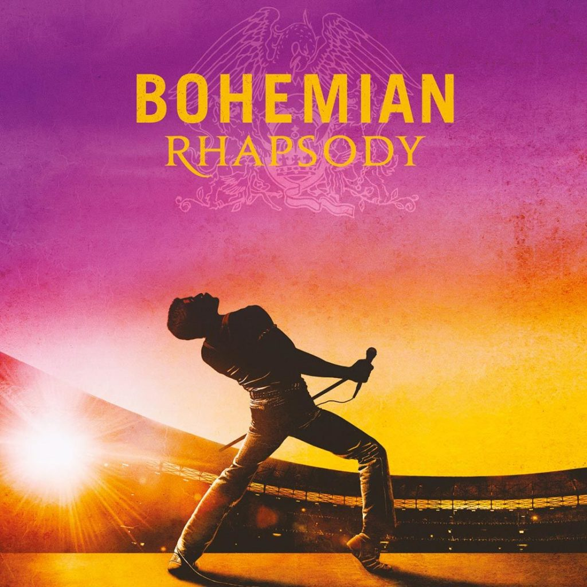
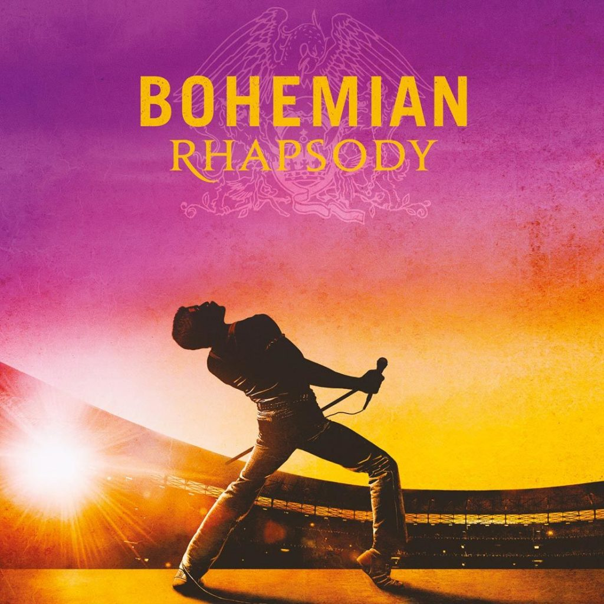
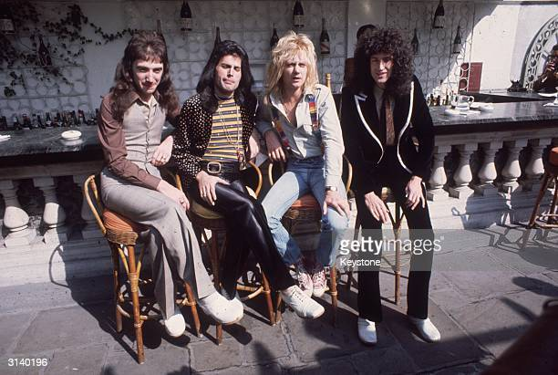
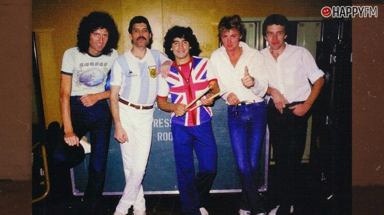

El legado de Freddie Mercury sigue vivo
Queen publica una canción inédita con la voz del cantante Aunque parezca mentira, ya han pasado tres décadas del fallecimiento de Freddie Mercury, pero ha llegado a abandonarnos realmente.

Queen publica una canción inédita con la voz del cantante Aunque parezca mentira, ya han pasado tres décadas del fallecimiento de Freddie Mercury, pero ha llegado a abandonarnos realmente.
El primer bajista de la banda 'Queen', Mike Grose, ha fallecido.El bajista solo protagonizó los tres primeros conciertos de la banda, pero los miembros del grupo liderado. Pero ha llegado a abandonarnos.
Lo hacía a los 45 años, sin descendencia, con una enorme fortuna y habiendo emitido el día anterior un comunicado en el que saldaba algunas deudas con sus seguidores y con el colectivo LGTBIQ.
